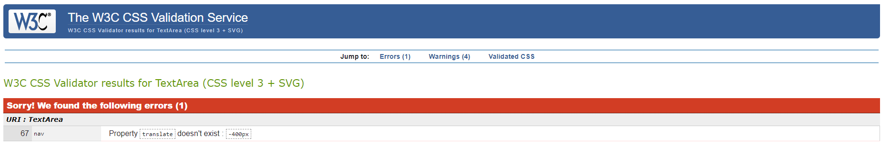

A learning experence
This website takes a large amount of inspiration from Google Material Design 3 as I thought it looks genuinely nice to the eyes and it would also be an extra challenge to create something that lives up to their design guidelines. (https://m3.material.io/)
I also made use of the Mozilla CSS docs and W3S to help with my coding
(https://developer.mozilla.org/en-US/docs/Web/CSS)
(https://www.w3schools.com/css/default.asp)
To begin this site started as a basic form of the lesson site. the colours didn't look very nice, so I swapped them out for a set of designated variables that correspond to a material pallet. I then assigned them to the key elements that would be coloured.
after that, I decided to get rid of the aside and footer as they cluttered up the homepage. plus, they could just be made into an extra page. next, I got a rough feel of the grid I would need by using (https://grid.layoutit.com/) this allowed me to properly visualise how the grid would look on the home page.
After applying the grid, I got to styling the 3 primary sections with CSS. The nav the header and the main. as I messed around with the rounded corners I settled on a rounded box as the main content with the nav and the header having the same background. to make this work I made the box scrollable, so it was like its own little main content island. and of course, with this I had to make sure that the scrollbar was correctly styled.
After I was decently happy with the desktop home page I begun the mobile optimisation phase. This started with having the grid area be single file and the navbar pushed out of existence. This part was particularly painful as creating and moving the hamburger icon around proved to be a massive pain, but I got it done in the end. The next issue was then making sure that the nav bar appeared and disappeared on hamburger click.
I could not get the nav to appear and disappear using just CSS for the life of me, so I had to resort to using JS to run a function that switched the style header. After a few days of trial and error I was able to ger that up and running with as few lines as possible. As a bonus of discovering the power of JS I was also able to implement a dark and light theme transition on the nav bar. This was possible because of my previous use of colour variables I only needed to link a style sheet with the light version of my colours which allowed me to make the switch seamlessly.
Next was the animating part of the nav bar in the mobile view. I wanted it to swing out on press and retract. Witch proved most difficult as I had to completely redesign the way the button press worked but as a result, I was able to learn about animation curves (https://m3.material.io/styles/motion/easing-and-duration/tokens-specs) and this made CSS animations clear to me. So, I was able to make the swinging navbar in mobile view and animate the transition of light and dark mode. I was also able to give the navbar a background in the mobile view to make it look like a sliding card. And make the links phase in as the mouse hovered over it.
The next issue I addressed was the content and its scaling. This was an issue as the content did not scale well when shrunk into mobile view or expanded across 2 desktops. I aimed to make sure that the content was standardised across all page views, so I had to create an invisible content div inside the main div this was the main constrictor of the content and made sure that it scaled evenly across window sizes. This turned out to be a good idea as it helped massively in the project page where I altered the gird to have multiple scrollable cards in the main div which all needed to scale correctly. Making sure that the paddings and margins resized according to the window.
desktop.css
fonts-and-colours.css
main.css
mobile.css
“Property translate doesn't exist : -400” negative translates are used to move elements in the opposite direction (https://developer.mozilla.org/en-US/docs/Web/CSS/transform-function/translate)
project.css
light.css
dark.css